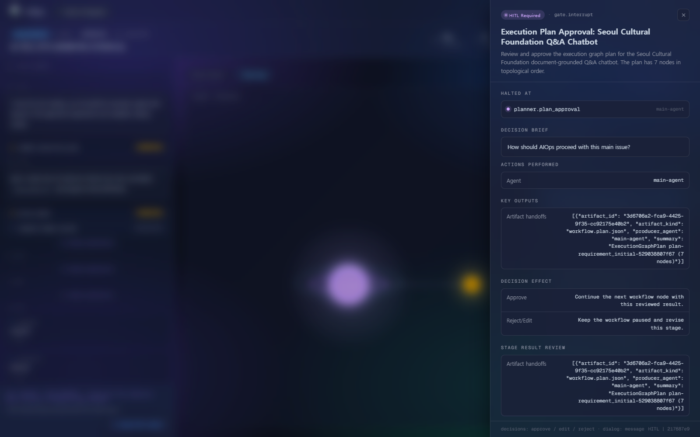

업무에 맞는 모델을 선택하고,
GPU 제약 안에서 실제 운영까지 완성했습니다.
모델 선정부터 Runtime·Gateway·Agent Control Plane까지 직접 구축·운영한 AI Platform 사례입니다.
Cowork LLM과 AI PoC ServingServer를 서로 다른 운영 경로로 분리했습니다.
실제 Cowork 요청에서는 GLM-5.3-Flash가 문제의 핵심을 가장 잘 파악했습니다.
모델 크기가 아니라 업무 적합성에서 시작
다양한 구성원의 요청 의도와 실제 업무 문제를 정확하게 해석하면서, 여러 사용자가 공유하는 고정 GPU 환경에서 운영할 수 있어야 했습니다.
→ 응답 비교
→ 운영 모델 결정
후보별 임의 점수나 순위를 만들지 않고, 실제 업무 요청에서 의도와 핵심 문제를 가장 잘 파악한 모델을 선택했습니다.
328GB FP8를 그대로 싣는 대신 AWQ W4A16으로 A100 배포를 성립시켰습니다.
가중치뿐 아니라 Runtime·CUDA Graph·KV Cache가 사용할 메모리 여유가 필요했습니다.
검토 후 제외 · 공식 FP8 그대로 적재
약 320B 전체·18B 활성 파라미터 모델의 가중치만으로도 운영 여유를 확보하기 어려웠습니다.
최종 선택 · 커뮤니티 AWQ W4A16 체크포인트
A100 기반 vLLM 최종 배포 완료
RTX PRO 6000 한 대에서 모델 특성에 따라 vLLM과 격리형 Sidecar를 분리했습니다.
vLLM 실행 계층
Server FastAPI
기능별 API
Service Manifest
격리형 Sidecar
Lazy Loading·GPU Lease로 공유 GPU의 경합과 모델 전환을 통제했습니다.
LLM Tier
수명주기
Sidecar
스케줄링
task = self._loading_tasks.get(normalized)
if task is None:
task = asyncio.create_task(
self._background_load(normalized)
)
drain_deadline = asyncio.get_running_loop().time() + _TIER_DRAIN_TIMEOUT_S
while self._tier_inflight.get(tier, 0) > 0:
if asyncio.get_running_loop().time() >= drain_deadline:
break
사용할 수 없는 Tier를 다른 모델로 조용히 대체하지 않고 명시적인 실패를 반환합니다.
최신 Backend보다 현재 GPU·모델 조합에서 검증 가능한 실행 계약을 우선했습니다.
해당 배포 조합에서 운영 호환성을 확보하지 못해 프로덕션 경로에서 제외
TRITON_ATTN · FP8 E4M3 KV · Prefix Caching · Chunked Prefill · O2/CUDA Graph
FlashAttention 2 · BF16 중심 경로로 분리
실행 계약 테스트
assert _arg_value(command, "--attention-backend") == "TRITON_ATTN" assert _arg_value(command, "--kv-cache-dtype") == "fp8_e4m3" assert _arg_value(command, "--optimization-level") == "2" assert "--enable-chunked-prefill" in command assert "--enable-prefix-caching" in command
모델별로 Attention Backend와 KV Cache 정밀도를 분리하고, 설정이 바뀌면 테스트가 실패하도록 계약을 고정했습니다.
프로세스 생존과 실제 요청 준비 상태, 배포 무결성을 서로 다른 계약으로 분리했습니다.
Service Manifest가 실행 가능 범위를 명시
모델 ID, 기능, 입력 형식과 한계를 외부 계약으로 제공하고 Canonical SHA-256으로 Manifest 전체의 무결성을 확인합니다.
payload: dict[str, Any] = {
"schema_name": "ServingServiceManifest",
"profiles": profiles,
"operation_contract": serving_operation_contract_snapshot(),
}
payload["manifest_hash"] = _manifest_hash(payload)
LiteLLM으로 사용자별 접근·호출량·월 예산을 운영 정책으로 만들었습니다.
| 사용자 범위 | 호출 정책 | 비용·Token 정책 |
|---|---|---|
| 일반 구성원 | 120 RPM | 금액·Token 제한 없음 |
| 인턴·제한 사용자 | 5 RPM | 월 $100 Budget |
내부 청구가 목적이 아니라, 동일 사용량을 외부 API로 전환하거나 병행할 때 필요한 운영비를 추정하기 위한 기준입니다.
Agent의 제안은 Compiler와 사람의 승인을 통과한 뒤에만 Runtime으로 전달됩니다.
Agent proposes.
Compiler validates.
Runtime executes.

모델 선정부터 Runtime·Gateway·Control Plane까지 하나의 운영 문제로 연결했습니다.
| 상태 | 확인한 내용 | 근거 |
|---|---|---|
| 구현 확인 | Tier Loader · 120초 Drain | ServingServer/src/loaders/llm_loader.py |
| 구현 확인 | Queue · Microbatch · Singleflight · GPU Lease | tests/test_sidecar_gpu_scheduling_contract.py |
| 구현 확인 | Readiness · Service Manifest | src/api/service_manifest.py · tests/test_service_manifest_contract.py |
| 운영 확인 | GLM AWQ W4A16 배포 · LiteLLM 정책 | 운영자 확인 · 사용자별 정책값 |
구조화되지 않은 요구를 모델 선택, GPU Runtime, 접근 정책과 실행 통제로 구체화하고 실제 조직이 사용할 수 있는 플랫폼으로 구현했습니다.
공개 범위 · 실제 저장소 구현과 운영 확인값만 사용했으며, 외부 공개가 가능한 TTFT·TPOT·p95·Throughput 수치는 포함하지 않았습니다.